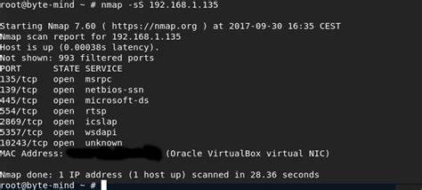
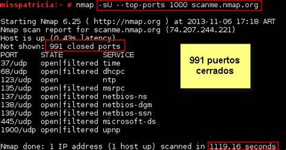

La captura de ciberdelincuentes es compleja y puede implicar la colaboración de múltiples agencias gubernamentales y organizaciones de seguridad. Puede incluir la identificación de los delincuentes mediante la recopilación de pruebas digitales y el seguimiento de transacciones financieras. Una vez identificados, se pueden emitir órdenes de arresto y extradición.
Las motivaciones de los ciberdelincuentes pueden ser diversas, como obtener ganancias financieras, robar información valiosa, dañar la reputación de una empresa o gobierno, o simplemente demostrar su habilidad técnica.
La DeepWeb es el contenido de la web que no está indexado por los motores de búsqueda convencionales y que requiere autenticación o acceso especializado para ser encontrado. La DarkWeb es una parte de la DeepWeb que está oculta intencionalmente y que se accede a través de redes privadas y anonimizadas como Tor. La DarkWeb es conocida por ser un lugar donde se realizan actividades ilegales y se venden productos y servicios ilegales.
Las motivaciones de los ciberdelincuentes pueden ser diversas, como obtener ganancias financieras, robar información valiosa, dañar la reputación de una empresa o gobierno, o simplemente demostrar su habilidad técnica.
Las capas 1-4 del modelo OSI (física, enlace, red y transporte) son implementadas por hardware, mientras que las capas 5-7 (sesión, presentación y aplicación) son implementadas por software.
NMap es una herramienta de escaneo de redes que se utiliza para detectar hosts y servicios en una red, así como para identificar puertos abiertos y cerrados en esos hosts. También puede ser utilizado para detectar sistemas operativos y versiones de software.

El escaneo ARP es un tipo de escaneo de red que utiliza el protocolo ARP (Address Resolution Protocol) para detectar la presencia de dispositivos en una red local. El escaneo ARP se utiliza típicamente para descubrir hosts en una red local, identificar su dirección IP y MAC y ver si están activos.
El escaneo de puertos es un proceso utilizado para encontrar puertos abiertos en una red. Un puerto es una puerta de entrada o salida en un dispositivo de red que puede utilizarse para enviar o recibir información. El escaneo de puertos se utiliza para identificar qué puertos están abiertos y qué servicios se están ejecutando en esos puertos.
El escaneo de puertos TCP es un tipo de escaneo de puertos que se utiliza para detectar qué puertos TCP están abiertos en un host. El escaneo TCP funciona enviando un paquete de solicitud a un puerto específico en un host y esperando una respuesta. Si el puerto está abierto, el host responderá con un paquete de respuesta. Si el puerto está cerrado, el host no responderá.
El escaneo de puertos UDP es un tipo de escaneo de puertos que se utiliza para detectar qué puertos UDP están abiertos en un host. El escaneo UDP funciona enviando un paquete de solicitud a un puerto específico en un host y esperando una respuesta. Si el puerto está abierto, el host responderá con un paquete de respuesta. Si el puerto está cerrado, el host responderá con un paquete ICMP.

Las vulnerabilidades IDOR (Insecure Direct Object References) ocurren cuando una aplicación web permite el acceso directo a objetos internos sin la debida autenticación o autorización. Esto puede permitir a un atacante acceder a recursos protegidos o datos de otros usuarios.
El SQL injection es un tipo de ataque de inyección que se utiliza para explotar vulnerabilidades en una aplicación web que utiliza bases de datos. Este ataque se realiza mediante la inserción de código SQL malintencionado en las entradas de datos de una aplicación web, lo que puede permitir a un atacante manipular la base de datos y acceder a información confidencial.
El ataque XSS (Cross-Site Scripting) es un tipo de ataque que se utiliza para explotar vulnerabilidades en una aplicación web que permite la ejecución de código malicioso en el navegador de un usuario. El ataque XSS se realiza mediante la inserción de código malicioso en el contenido de una página web, lo que puede permitir a un atacante robar información de la sesión del usuario o redirigir al usuario a sitios web maliciosos.
Los ataques de ingeniería social se basan en el engaño y la manipulación de las personas para obtener acceso no autorizado a sistemas y datos confidenciales. Los hackers que utilizan la ingeniería social suelen utilizar técnicas como la suplantación de identidad, la persuasión, la intimidación y la explotación de la confianza para obtener información sensible o acceso a sistemas.
Para protegerse contra los ataques de ingeniería social, es importante que las empresas eduquen a sus empleados sobre las técnicas comunes utilizadas por los hackers y les enseñen cómo identificar y evitar estas tácticas. Además, es importante implementar políticas de seguridad sólidas y utilizar tecnologías de seguridad avanzadas para proteger los sistemas y datos sensibles.
La autenticación multifactor (MFA, por sus siglas en inglés) es un método de autenticación que utiliza más de una forma de verificación para confirmar la identidad de un usuario. El objetivo de la autenticación multifactor es aumentar la seguridad y dificultar el acceso no autorizado a los sistemas y datos.
Algo que sabe el usuario (como una contraseña o un PIN).
Algo que tiene el usuario (como un teléfono móvil o una tarjeta de identificación).
Algo que es el usuario (como una huella digital o un escaneo de retina).
Al utilizar más de un factor de autenticación, la autenticación multifactor ayuda a prevenir el acceso no autorizado incluso si un atacante ha comprometido una contraseña o un factor de autenticación.
Credential Stuffing es un tipo de ataque de fuerza bruta que se utiliza para explotar la reutilización de contraseñas por parte de los usuarios. El ataque funciona mediante la utilización de credenciales (nombres de usuario y contraseñas) que han sido filtradas o robadas en otros sitios web, para tratar de acceder a una cuenta en un sitio diferente.
Para protegerse contra el Credential Stuffing, los usuarios deben evitar reutilizar contraseñas y utilizar contraseñas seguras y únicas para cada sitio web. Además, las empresas pueden implementar medidas de seguridad, como la autenticación multifactor y la monitorización de actividad inusual en las cuentas, para detectar y prevenir ataques de Credential Stuffing.